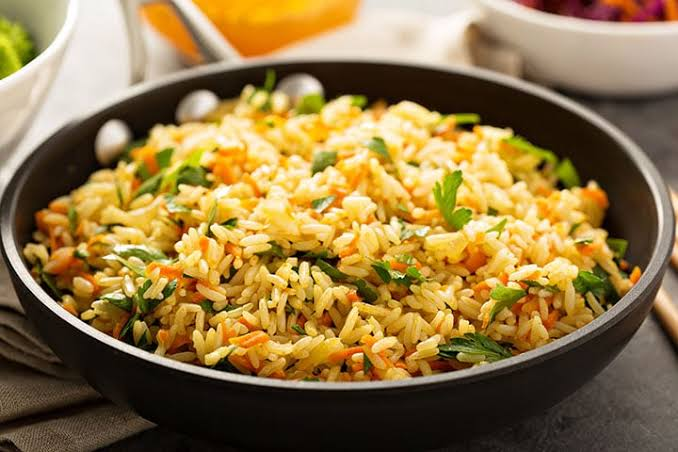

Recipe Information
Preparation Time: 15 minutes
Cooking Time: 40 minutes
Servings: 4 people
Ingredients
- Rice: 1 cup long-grain white rice
- Cooking Fat: 1 tbsp olive oil or butter
- 2 cups vegetable broth
- ½ medium yellow or white onion
- 2 cloves garlic
- 1 cup mixed diced carrots, green peas, diced bell peppers, or corn
- ½ tsp turmeric
- ¼ tsp ground coriander
- 1-2 bay leaves
- 1 tbsp fresh parsley
- Salt and freshly cracked black pepper
Preparation Steps
- Place rice in a fine-mesh strainer
- Rinse thoroughly under cold running water
- Stop when the water runs completely clear
- Drain all excess water and set aside
- Heat oil or melt butter in a saucepan
- Set the heat to medium
- Add the diced onions to the pan
- Sauté for 4 to 5 minutes until translucent
- Stir in the minced garlic and bay leaves
- Cook for 1 minute until highly fragrant
- Add the drained rice to the saucepan
- Stir well to coat grains in fat
- Add turmeric, coriander, salt, and black pepper
- Cook for 2 to 3 minutes while stirring
- Pour in the vegetable broth or water
- Stir gently to combine all ingredients well
- Add your mixed vegetables to the pot
- Bring the liquid to a rolling boil
- Cover the pot tightly with a lid
- Turn the heat down to low immediately
- Simmer undisturbed for 15 to 18 minutes
- Remove the saucepan from the heat source
- Keep the lid on the pot tightly
- Let it steam covered for 10 minutes
- Remove the lid and discard bay leaves
- Fluff gently with a fork before serving
- Garnish with fresh chopped parsley if desired
Nutrition Values
| Nutrient | Amount |
|---|---|
| Calories | 220-260 kcal |
| Carbohydrates | 39-45 g |
| Protein | 4-5 g |
| Fat | 5-7 g |
| Dietary Fiber | 1-2 g |